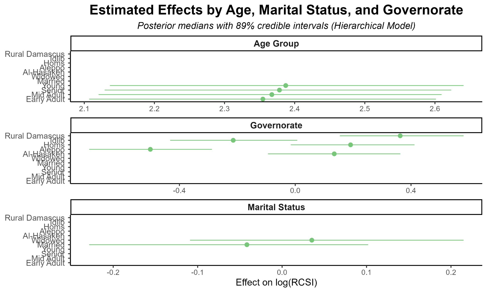
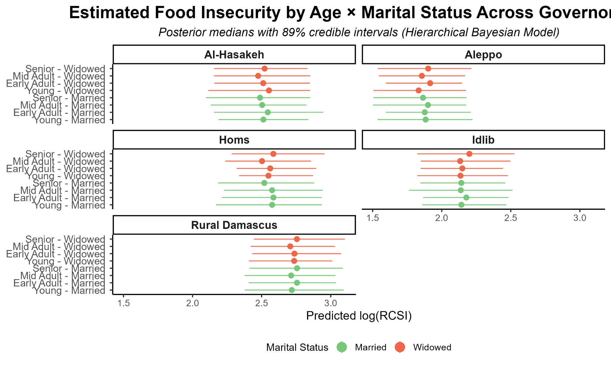

RESEARCH PROJECT · 2025
Bayesian Hierarchical Modeling of Food Insecurity
Age, marital status and governorate variation among female-headed households in Syria · Bayesian Modeling course · 2025

Research question and hypotheses
How do age, marital status and governorate relate to household food insecurity among female-headed households in Syria? The analysis tests whether married women experience less food insecurity than widows (H1), whether older widows experience less insecurity than younger widows (H2), and whether baseline levels differ across governorates (H3).
Data and Bayesian model
The outcome is the log-transformed Reduced Coping Strategy Index, log(1 + RCSI). The right-skewed original index was transformed to improve symmetry and modelled using a Normal likelihood, rather than a Poisson count model.
μn = αa[n] + γm[n] + δg[n] + ηam[n]
Here α denotes age-group intercepts, γ marital-status effects, δ governorate effects, and η the age × marital-status interaction. A non-centered, cross-classified Bayesian hierarchical model uses partial pooling to regularize estimates in sparsely populated groups, with weakly informative priors.
Model checks
I assessed chain convergence, effective sample sizes, prior predictive plausibility and posterior predictive fit. The research note reports R̂ ≤ 1.01 across monitored parameters and adequate effective sample sizes. The prior predictive check compares the range implied by the priors against the observed log-RCSI distribution; posterior predictive simulations were also compared with observed outcomes.
Results and discussion
Varying demographic and governorate effects

Predicted food insecurity by age, marital status and governorate

Widowed women generally show higher predicted food insecurity than married women, but credible intervals overlap, indicating substantial uncertainty. Age differences are modest and do not consistently support the hypothesis that older widows are less vulnerable. Governorate-level differences are more pronounced, suggesting contextual heterogeneity.
Small subgroup samples, omitted covariates and cross-sectional data limit precision and causal interpretation. The project demonstrates hierarchical model design, partial pooling, posterior uncertainty and model checking.